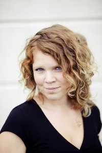

Sommerworkshop om konseptutvikling m/Leikhús
- Dato:
- 18.07.2012 til 19.07.2012
- Start kl :
- 17:00
- Slutt kl :
- 21:00
- Pris:
- 500,-
- Adresse:
- Kunsthøgskolen i Oslo, Oslo
 Hvor begynner du når du vil sette opp et stykke? Hva har dramatikeren ønsket, og hva ønsker du? Med utgangspunkt i stykket Terrorisme av brødrene Presnyakov skal vi lete i ulike metoder for å finne veien til et helhetlig konsept. Vi forsker både teoretisk og praktisk i form, tematikk og det visuelle. LEIKHÚS vil hjelpe deg med å finne din egenart i en skapende teaterprosess. Teksten vil bli sendt ut på e-post til alle deltakere, og den må være lest innen kursstart.
{kind=link}
Workshopen er et samarbeid mellom Norsk Skuespillersenter og det nyopprettede Alumni-prosjektet ved Teaterhøgskolen. Påmeldingsfrist 13. juli!
LEIKHÚS ble startet i 2010 av regissør Maren Bjørseth, skuespillerne Ingrid Løhre Hunnestad og Siri Schnell Juvik og produsent Ane Wennevold. Vi har siden oppstarten samarbeidet med dramatiker Kristofer Grønskag. Det har resultert i to nyskrevne skuespill for barn: Mustasjemysteriet, som ble satt opp både i 2010 og 2011, og Og alt skal bli borte, som skal produseres i sommer. LEIKHÚS har i sine to første år fokusert på teater for barn, og vil framover fokusere på teater for voksne. Uavhengig av om vi lager teater for barn eller voksne, ønsker vi med våre produksjoner å lage en reell møteplass mellom publikum, forestillingen og skuespillerne. I vår søken etter dette utvikler vi noe som heter Randprogram til våre forestillinger. Det er et europeisk fenomen som innebærer å tilrettelegge for flere møtepunkt mellom tema vi tar opp i forestillinga, publikum og de på og bak scenen. Eksempelvis kan det være en uformell prat m. regissør etter forestilling, utstilling i forskjellige kunstformer som tematisk er i slekt med forestillingen, en debatt rundt det vi tar opp, osv. Vi vil prøve å viske ut skillet mellom publikummer og skuespiller, og skape debatt og diskusjon rundt forestillingene våre. Slik kan teateret bli en aktiv del av samfunnet. I tillegg vil vi være med som debattanter og meningsytrere på vegne av scenekunstfeltet. Men først og fremst vil vi lage godt teater.
Maren E. Bjørseth (f. 1984) gjorde i 2008 ferdig en bachelor i Drama/Teater ved NTNU i Trondheim. Samme år kom hun inn på regilinjen ved Kunsthøyskolen i Amsterdam. Under utdanningen har Maren blant annet hatt praksis og assistert regissører som Theu Boermans og Luk Perceval.
Mer om Teaterhøgskolens alumniprosjekt.